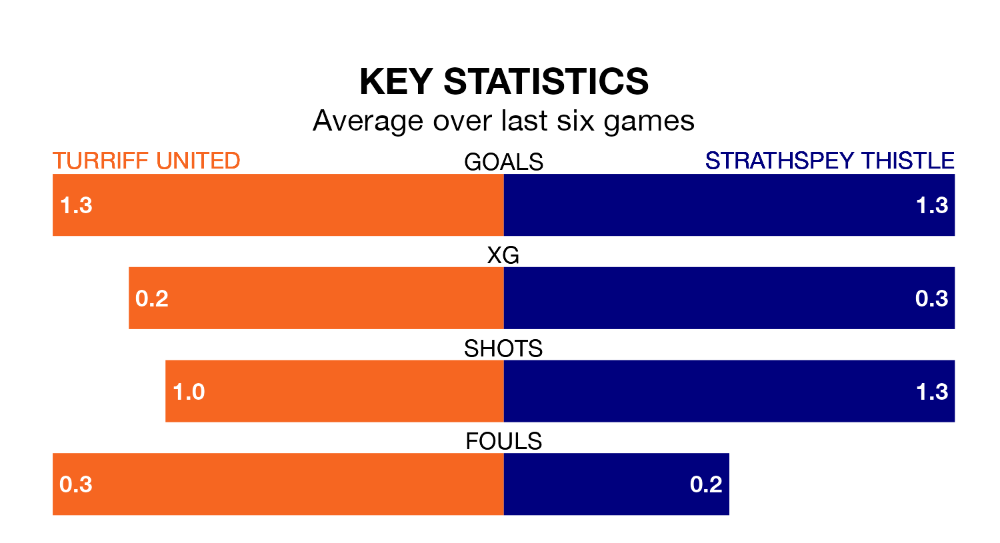

Turriff United are on a poor run ahead of hosting Strathspey Thistle at the Haughs on Saturday, with just four points collected from their last six games.
Turriff have picked up one win and one draw in their last six Highland Football League games, and face a Strathspey Thistle side whose last six games have brought three wins and three losses.
Strathspey Thistle are bottom of the table after 29 games, of which they have won five and drawn one, earning 16 points.
Turriff are nine places ahead of the visitors in ninth, with 14 wins and two draws putting them on 44 points.
In the last 10 years, Turriff and Strathspey Thistle have played each other on 13 occasions. Turriff won 12 of them and Strathspey Thistle one.
On average, Turriff scored 3.9 goals and Strathspey Thistle 0.6 in those matches.
Their last meeting was on November 25, when Turriff won 8-1 away.
With 32 goals in 29 games so far this season, Strathspey Thistle are the league's second-lowest scorers with 1.1 goals per game. And they are conceding more than average, letting in 105 goals at a rate of 3.6 per game.
United, meanwhile, are above average scorers, with 2.2 goals per game, compared to a league average of 1.8. They have conceded 1.9 goals per game.
Turriff's last match was on Saturday, a 0-0 draw against Lossiemouth.
Strathspey Thistle lost 4-0 against Nairn County last time out, also on Saturday.
Updated: 16:41 (UTC), 04/04/24